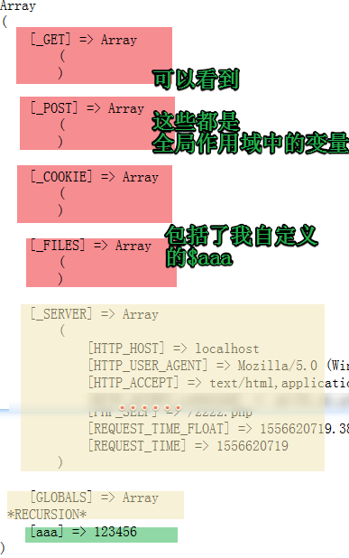

原文出处:本文由博客园博主html55提供。
原文连接:https://www.cnblogs.com/html55/p/10794094.html
原文连接:https://www.cnblogs.com/html55/p/10794094.html
超级全局变量有9个
特点是全局可用！
页面到处都能访问到这个变量
$_GET获得的是浏览器地址栏过来的数据，或者表单GET方式提交的数据
$_POST获得的是表单POST方式提交的数据
$_REQUEST默认情况（具体情况要看php.ini的配置）获得的是既包含POST过来的值，也包含GET方式获得的值
如下例子：2222.html上有个表单，提交给2222.php这个文件
<html>
<head>
<title>实验GET_POST的区别</title>
<meta charset="UTF-8"/>
</head>
<body>
<!--本文件2222.html提交数据-->
<form action="2222.php?id=5678" method="post">
<input type="text" name="username" value="" />
<input type="submit" value="提交"/>
</form>
</body>
</html>
1 <?php
2 header("Content-type:text/html;charset=UTF-8");
3 echo '<pre>';
4
5 //2222.php 接收数据并显示出来
6 print_r($_GET);
7 print_r($_POST);
8 print_r($_REQUEST);
9
10 echo '<pre>';
11 ?>
最终的结果，可以看到，$_REQUEST这个数组是$_GET和$_POST合并起来的
如果让get和post中有重名的呢？
修改2222.html中<form action="2222.php?id=5678" method="post">这句，改为<form action="2222.php?id=5678&username=李四" method="post">
再提交会发生什么呢？
如下，找到php配置文件，搜索 request_order
修改为PG，保存，重启apache,实验一下，就相反了，不细说。
$_ENV
打印一下$_ENV，print_r($_ENV); 看看出来的是什么？
发现，没有反应！空白。原来，考虑到信息安全问题，php的配置文件php.ini中，variables_order控制着$_ENV的显示

$_ENV里面是操作系统呀什么的这些信息

$_SERVER 打印出来如下：
Array
(
[HTTP_HOST] => localhost
[HTTP_USER_AGENT] => Mozilla/5.0 (Windows NT 6.1; Win64; x64; rv:66.0) Gecko/20100101 Firefox/66.0
[HTTP_ACCEPT] => text/html,application/xhtml+xml,application/xml;q=0.9,*/*;q=0.8
[HTTP_ACCEPT_LANGUAGE] => zh-CN,zh;q=0.8,zh-TW;q=0.7,zh-HK;q=0.5,en-US;q=0.3,en;q=0.2
[HTTP_ACCEPT_ENCODING] => gzip, deflate
[HTTP_CONNECTION] => keep-alive
[HTTP_UPGRADE_INSECURE_REQUESTS] => 1
[HTTP_CACHE_CONTROL] => max-age=0
[PATH] => C:\Windows\system32;C:\Windows;C:\Windows\System32\Wbem;C:\Windows\System32\WindowsPowerShell\v1.0\;C:\Program Files\nodejs\;C:\Program Files\Git\cmd;
[SystemRoot] => C:\Windows
[COMSPEC] => C:\Windows\system32\cmd.exe
[PATHEXT] => .COM;.EXE;.BAT;.CMD;.VBS;.VBE;.JS;.JSE;.WSF;.WSH;.MSC
[WINDIR] => C:\Windows
[SERVER_SIGNATURE] =>
[SERVER_SOFTWARE] => Apache/2.4.23 (Win32) OpenSSL/1.0.2j PHP/5.4.45
[SERVER_NAME] => localhost
[SERVER_ADDR] => ::1
[SERVER_PORT] => 80
[REMOTE_ADDR] => ::1
[DOCUMENT_ROOT] => E:/xxxx
[REQUEST_SCHEME] => http
[CONTEXT_PREFIX] =>
[CONTEXT_DOCUMENT_ROOT] => E:/xxxx
[SERVER_ADMIN] => admin@phpStudy.net
[SCRIPT_FILENAME] => E:/xxxx/2222.php
[REMOTE_PORT] => 2479
[GATEWAY_INTERFACE] => CGI/1.1
[SERVER_PROTOCOL] => HTTP/1.1
[REQUEST_METHOD] => GET
[QUERY_STRING] =>
[REQUEST_URI] => /2222.php
[SCRIPT_NAME] => /2222.php
[PHP_SELF] => /2222.php
[REQUEST_TIME_FLOAT] => 1556588895.594
[REQUEST_TIME] => 1556588895
)
$GLOBALS — 引用全局作用域中可用的全部变量
它就是个快捷方式集合，把在全局作用域中的全部变量（除了$_ENV）都放在里面了。
$aaa = 123456;
print_r($GLOBALS);
